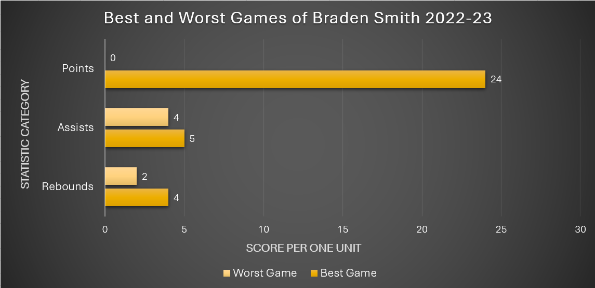
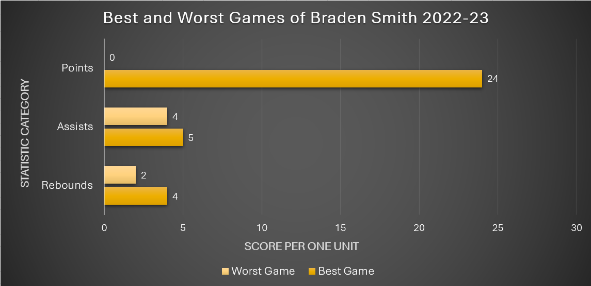
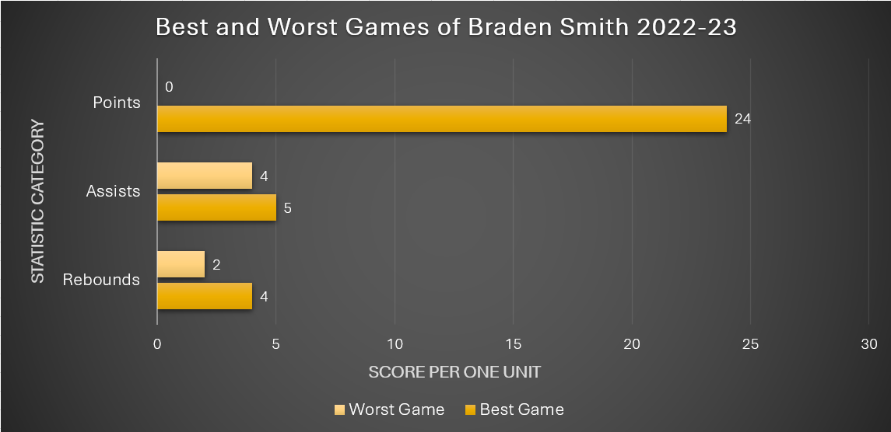

Graphic Design Class Projects
Over the course of the semester of Fall 2023, I have completed several graphic design related projects in various classes. The courses can be found in Education.
On this page, I will show only one for now, but more of my work can be found at Notion .
Project One:
The first project will be a group project from a data visualization class. My group chose the topic of Purdue Men's Basketball and to answer the question of who will be the best player on the team this year? We analyzed data from the previous year to come to a final answer.
Our team's website for this project can be found at: "Best Team".
Overview: This page will analyze four players on the Purdue Men’s Basketball team from the 22-23 season that are in the starting five of the 23-24 season. The visualizations will show how much of a range a player can have between their worst and best game to show improvement of the players skills and ability.
The Selected Players:
Zach Edey: Senior, Postion - Center, Height - 7'4"
Fletcher Loyer: Sophomore, Position - Guard, Height - 6'4"
Braden Smith: Sophomore, Position - Guard, Height - 6'0"
Trey Kaufman-Renn: Sophomore, Position - Forward, Height - 6'9"
Zach Edey: Senior, Postion - Center, Height - 7'4"
Fletcher Loyer: Sophomore, Position - Guard, Height - 6'4"
Braden Smith: Sophomore, Position - Guard, Height - 6'0"
Trey Kaufman-Renn: Sophomore, Position - Forward, Height - 6'9"
My Visualizations:

 


Conclusion of Individual Statistics: Overall, Zach Edey had the most points, assists, and rebounds all together out of the four players. Zach Edey also shows the most improvement in points and rebounds, while Loyer and Kaufman-Renn show the same amount of improvement in assists.
For more information about the data set, please click the "Data" icon above or for more information about the project, please go to our team website.

Conclusion of Individual Statistics: Overall, Zach Edey had the most points, assists, and rebounds all together out of the four players. Zach Edey also shows the most improvement in points and rebounds, while Loyer and Kaufman-Renn show the same amount of improvement in assists.
For more information about the data set, please click the "Data" icon above or for more information about the project, please go to our team website.
Team Members:
| First Name | Last Name |
|---|---|
| Lily | Kempf |
| Shayna | Lane |
| Drew | Sellke |
| Vaughn | Valentino |